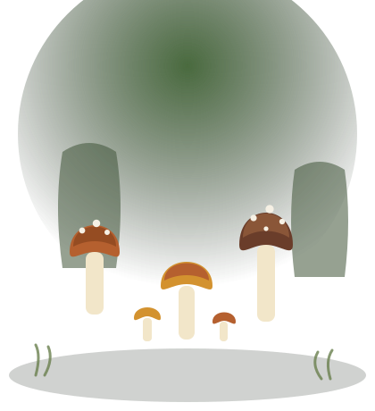

Jak zacząć swoją przygodę z grzybobraniem
Nie potrzebujesz drogiego sprzętu ani sekretnej wiedzy leśniczego. Potrzebujesz koszyka, noża i planu — pokazuję, od czego naprawdę zacząć pierwszy sezon.
Czytaj dalej →Od dziesięciu sezonów chodzę po lasach z koszykiem i nożykiem. Piszę o gatunkach, miejscówkach, błędach, które sam popełniłem, i przepisach, które zawsze wracają na mój stół.

Nie potrzebujesz drogiego sprzętu ani sekretnej wiedzy leśniczego. Potrzebujesz koszyka, noża i planu — pokazuję, od czego naprawdę zacząć pierwszy sezon.
Czytaj dalej →
Twardy, mięsisty, pachnący orzechami — borowik to grzyb, dla którego warto wstać przed świtem. Jak go rozpoznać na sto procent i z czym łatwo go pomylić.
Czytaj dalej →
Muchomor sromotnikowy potrafi wyglądać niewinnie, a gąska niedobra do złudzenia przypomina swoją bezpieczną kuzynkę. Osiem par, które musisz umieć odróżnić.
Czytaj dalej →
Nie zdradzę Ci moich sekretnych miejscówek — ale pokażę, jak samemu je znaleźć. Czym różni się bór sosnowy od grądu i dlaczego to ma znaczenie.
Czytaj dalej →
To danie, na które w mojej rodzinie czeka się cały rok. Prosty przepis, który pozwala grzybom mówić same za siebie — bez zagłuszania ich śmietaną.
Czytaj dalej →
Sam popełniłem każdy z nich w pierwszym sezonie. Od złego koszyka po zbieranie „na pewniaka” — czego unikać, żeby grzybobranie zostało przyjemnością.
Czytaj dalej →